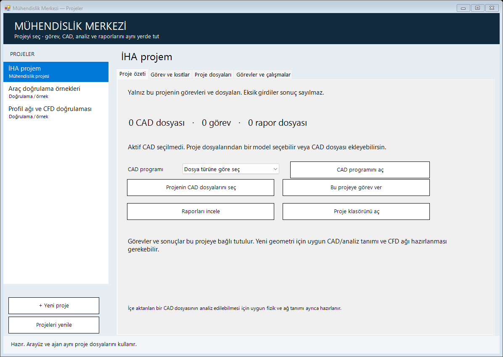
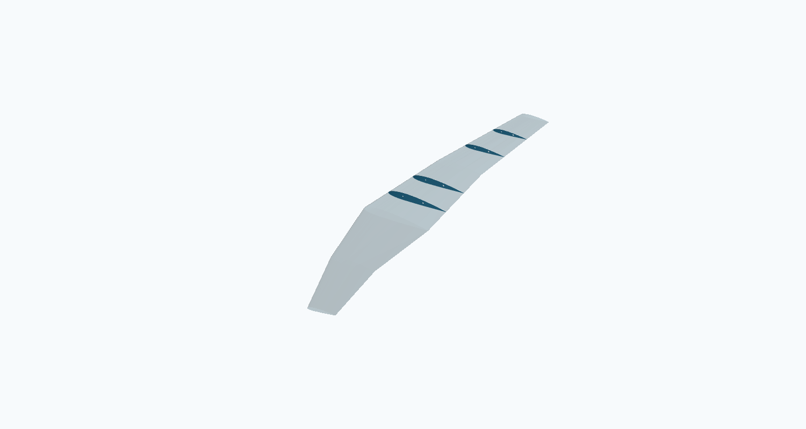
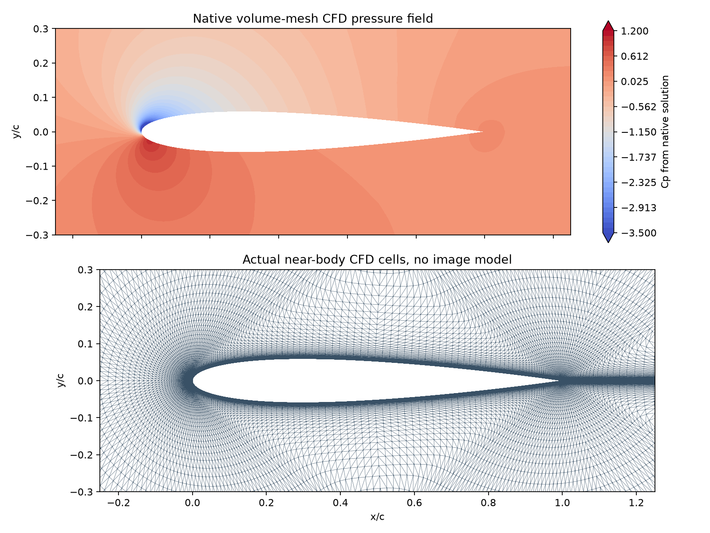
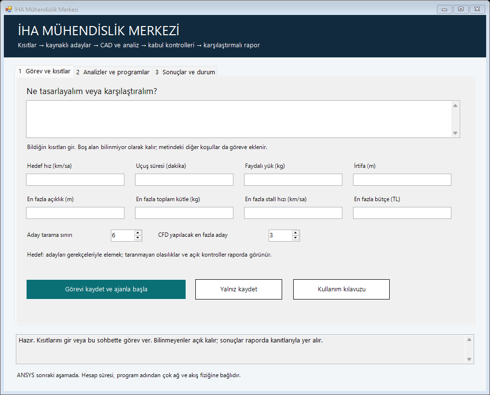
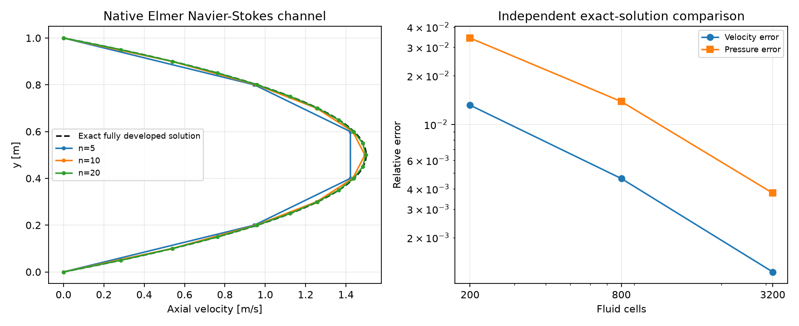
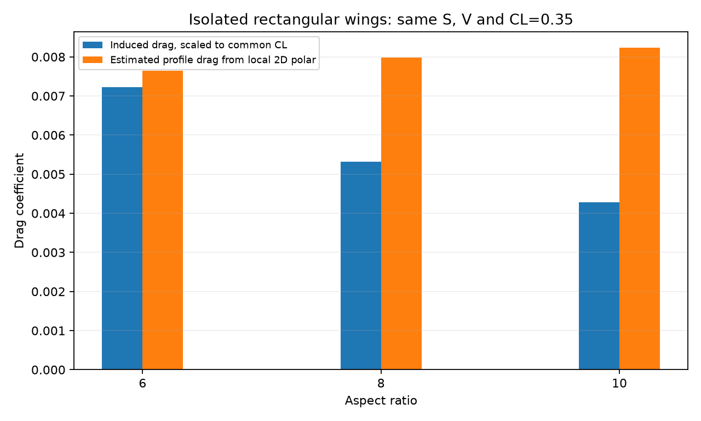
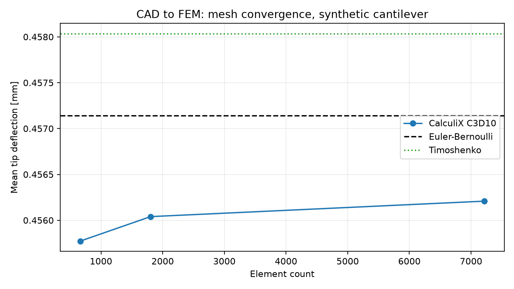
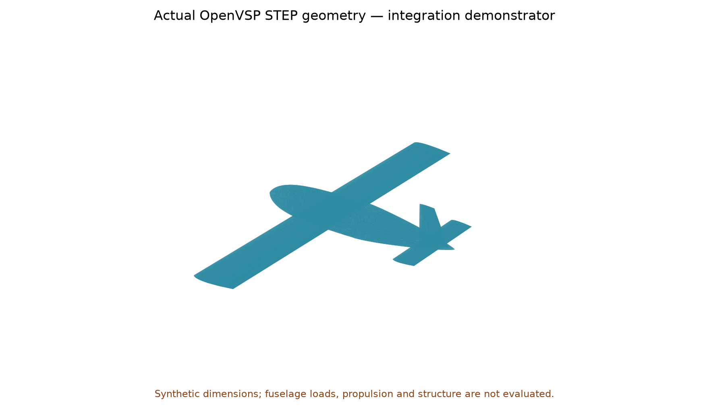
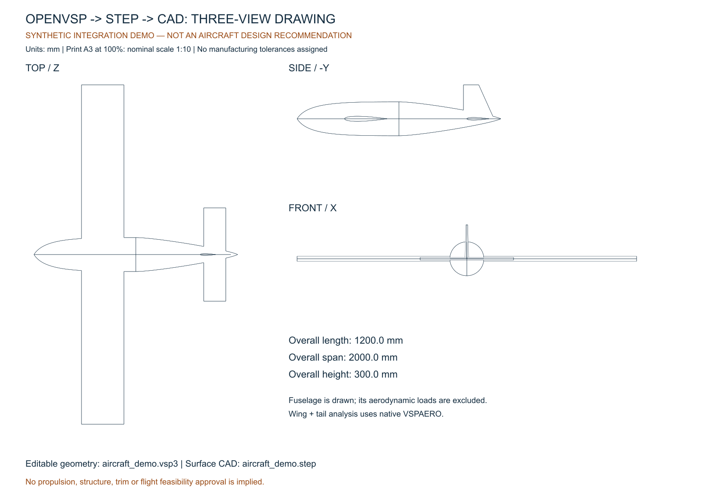

YEREL MÜHENDİSLİK ÇALIŞMA ALANI
İHA Mühendislik
Görevler, çizimler, gerçek çözücüler ve kontrol edilmiş çıktılar.
Başlamak için Muhendislik-Merkezi.exe dosyasını aç ve projeni seç. Aynı dosyalarla bu Codex sohbetinden de çalışabiliriz.
25 Ekim: kanıt odaklı güvenilirlik geliştirmesi
Aynı başlangıçla kontrollü M6 karşılaştırmaları, ham geçmişten yeniden hesaplanan denetim ve konumsal mesh göstergeleri. Desteklenmeyen nedenler ve geçersiz yerel şablonlar ayrı saklanıyor. Genel fizik kabulü açık.
24 Ekim: ONERA M6 gerçek3B testleri
RAE test paketi kapatıldıktan sonra kaynak M6 kanadında iki yeni RANS koşusu ve bütün271 rüzgâr tüneli noktasıyla kıyas yapıldı. Konuma göre duvar-normal aralıklar değiştirildi; hücre sayısı korundu. Son maksimum y+=0.830. Genel kabul henüz geçmedi; kalıntı, deney ve diğer açık kapılar raporda.
Ajan talimatı ve hata hafızası
Kanıtlı hatalar, önlenen riskler ve açık hipotezler ayrı kaydedildi. Operasyonel dersler ajan başlatıcısına bağlandı; 39/39 kod ve dosya kontrolü geçti. Görülmemiş mühendislik görevinde LLM iyileşmesi ve uzmanlık henüz kanıtlanmadı.
Kaynaklı CFD teşhisi ve bölgesel C-grid
Kaynak araştırmasıyla hazırlanan kontrollü native denemeler, ayrı sayısal alan denetimi ve konuma göre ağ düzeltmeleri raporlandı. Asgari yeterlilik henüz geçmedi; tamamlanmayan ağ/uzak alan ve deney kapıları açık tutuluyor.
Kaynak geometriden ayrı ajanla CFD sınaması
RAE2822'nin yayımlanmış koordinatlarından yeni bölgesel ağlar ve gerçek RANS çözümleri üretildi. Tahminler deney kıyasından önce donduruldu. Hücum kenarı eğri aktarımı ve özgün deney dosyasındaki bir işaret uyuşmazlığı kaynakla denetlendi. Asgari yeterlilik: henüz geçmedi. Bütün hatalar ve açık kontroller raporda.
Gerçek kıyas: karmaşık NIST CAD ve NASA deney verisi
Üç CAD parçasında kaynak yardımlı yeniden üretim/düzenleme ve native FreeCAD ölçü değişikliği test edildi. ONERA M6, iki kaynak ağda gerçek 3D RANS ile çözüldü; yedi kesitte 271 deney noktasıyla karşılaştırıldı. Kalite kabulü: açık. Ayrıntılı hata ve kapsam raporda.
19 Ekim: projeler, EXE ve yeni analizler
Dosyalar, görev taslakları, CAD programı ve aktif model proje içinde tutuluyor. Hazır proje tanımı yoksa eski örnek sessizce çalıştırılmıyor. Kaynak DAT'tan yeni SU2 Euler ağı/çözümü ve OpenAeroStruct örnekleri ayrıca sınandı; kabul kapsamları raporda ayrı.

Proje içinden görev, CAD ve rapor seçimi.Parametrik CAD çalışıyorGeometri ölçümlerle denetleniyor; yerel CAD ve analiz uygulamaları kurulu.
CFD kabulü sürüyorGerçek SU2 alan çıktısı var; sürükleme ağ hassasiyeti ve Fusion motor testi açık.
Gerçek İHA: veri bekliyorGörev, bileşen kütleleri ve kabul ölçütleri girilmeden uygun uçak sonucu verilmez.
Yeni: deterministik CAD, karmaşık VLM ve gerçek CFD
Kaynak NACA2412 profilinden süpürmeli, daralan, burulmalı kanat ve dört nervür üretildi. CAD 9/9 kontrolü geçti; sekiz deliğin çapı ve eksenleri ayrıca STEP dosyalarından ölçüldü. Boyutlar araç sınaması için varsayımdır.

Gerçek STEP dosyalarından kanat ve nervür görünümü.
SU2'nin çözdüğü basınç alanı ve gerçek yakın-cisim ağı.| Çalışma | Gerçek sonuç | Açık kabul |
|---|
| Deterministik CAD | 1,80 m açıklık; 4 nervür; STEP/SVG | Bu geometri ailesi sınandı; imalat/yapı kabulü yok |
| Native VSPAERO | 0/3/6°; iki panel sıklığı | İz CDiw değişimi ~%2; yüzey CDi değişimi %17–18 |
| SU2 INC_RANS | 57.344 hücre; CL=1.089686, CD=0.013444 | Orta→ince CD farkı %22.84; ağ kabulü geçmedi |
| Resmi Fusion MCP | Sunucu kaydı ve Autodesk girişi tamam | Bağlantı yenilemesi, lisans/hub ve motor testi bekliyor |
CFD ve yeni VLM çalışıyor; tüm kalite ölçütleri sağlanmadı. Bunlar gerçek İHA tasarımı veya genel airfoil doğruluğu kanıtı değildir.
Önceki çalışma: kısıt girişi ve hafif CFD
Önceki üç sekmeli arayüz proje merkezli yeni EXE ile yenilendi; aşağıdaki görünüm tarihsel kayıttır. Birimli kısıtlar ve araştırma, CAD, ön analiz, CFD ve rapor adımları görev kaydında kanıtlarıyla izlenir.
Taşınabilir Elmer 26.2 eklendi; native Navier–Stokes üç ağda analitik kanal çözümüyle sınandı. İnce ağda hız hatası %0.123, basınç hatası %0.376. Bu, uçak CFD kabulü değildir; mevcut SU2 sürükleme yakınsaması açık kalır.

Görev ve kısıt girişi; boş alanlar bilinmiyor kalır.
Native Elmer akış çözümü, bağımsız referans ve üç ağ.Nasıl kullanacaksın?
- Mühendislik Merkezi içinde görevi kendi cümlelerinle yaz.
- Ajanın dosyaları okumasını, uygun araçları çalıştırmasını ve sonuçları kontrol etmesini iste.
- Çizim, analiz, açık kontroller ve kanıtlar bu proje klasöründe birlikte saklanır.
Örnek: “İki kanat adayını aynı kısıtlarla karşılaştır; verilerin kaynağını, CAD dosyalarını, yakınsama kontrollerini ve eksikleri raporla.”
Gerçek çalıştırmalar
| Çalışma | Geçen / toplam | Rapor |
|---|
| Hesap ve girdi kontrolleri | 26/26 | Kanıtı aç |
| OpenVSP / XFOIL / çizim | 26/26 | Kanıtı aç |
| FreeCAD / Gmsh / CalculiX | 14/14 | Kanıtı aç |
| Parametreli kanat karşılaştırması | 27/27 | Kanıtı aç |
| Hatalı CAD taslaklarının düzeltilmesi | 3/3 | Kanıtı aç |
Bunlar belirtilen örnekler ve yöntemler için araç kontrolleridir. Fiziksel tasarımın bütün gereksinimlerini doğrulamaz. ANSYS sonraki ağır kurulum aşamasındadır.
Yeni araştırma ve kapsamlı proje raporu
Geliştiricinin daha yeni Cadmonkey data-32 sürümü indirildi, dosya özeti doğrulandı ve eski K-1B ile aynı ölçülerde karşılaştırıldı. Aşağıdaki sayılar düzeltilmemiş model çıktılarına aittir.
| Model | Koşul | Geometri kabulü |
|---|
| K-1B | MakeMe istemi, T=0 | 0/3 |
| K-1B | Eğitimdeki istem, T=0 | 0/3 |
| K-1B | Eğitimdeki istem, T=0,8 / iki seed | 0/6 |
| K-1B | Ek ölçü kuralları, T=0 | 1/3 |
| Cadmonkey data-32 | MakeMe istemi, T=0 | 3/3 |
| Cadmonkey data-32 | Eğitimdeki istem, T=0 | 3/3 |
| Cadmonkey data-32 | Eğitimdeki istem, T=0,8 / iki seed | 5/6 |
| Cadmonkey data-32 | Ek ölçü kuralları, T=0 | 2/3 |
Altı farklı yeni parça: K-1B: 0/6; data-32: 4/6. Bunlar küçük yerel deneylerdir; genel başarı oranı veya mühendislik güvencesi değildir.
İlk yerel CAD denemeleri
| Deneme | Yerel üretim | Geometri kabulü | Toplam süre |
|---|
| K-1B / box | çalıştı | kabul edilmedi | 1.95 s |
| K-1B / hole_plate | çalıştı | kabul edilmedi | 2.02 s |
| K-1B / spacer | çalıştı | kabul edilmedi | 1.89 s |
| Zero-to-CAD / sekiz görünüş | çalıştı | kabul edilmedi | 25.94 s |
Eski K-1B kutuyu merkezlemedi; delikli plakada çıkarma işlemi eksikti; ara parçada çap/yarıçap karıştı. Zero-to-CAD Q6 denemesi tamamlanmış katı üretmedi. Sonrasında Codex'in düzelttiği üç parça ayrı kontrollerden geçti.
İlk ölçümler · Codex tarafından düzeltilen parçalar
Dosyadan yönetilen kanat karşılaştırması
Test varsayımları: 0,50 m² alan, 30 m/s, CL=0,35. Değişen veterle Reynolds sayısı yeniden hesaplandı. VSPAERO yük dağılımı ve XFOIL poları birlikte kullanıldı.
| AR | Açıklık | Veter | Re | CDi | Tahmini profil CD |
|---|
| 6 | 1.732 m | 0.289 m | 592,870 | 0.00722 | 0.00765 |
| 8 | 2.000 m | 0.250 m | 513,440 | 0.00531 | 0.00798 |
| 10 | 2.236 m | 0.224 m | 459,235 | 0.00428 | 0.00823 |
İzole düz kanatlar; profil sürüklemesi yaklaşık 2D eşleştirmedir. Sonuç, tüm uçağın sürüklemesi, optimum tasarım veya sürdürülebilir hız kanıtı değildir. Düzenlenebilir deney girdisi.
Çizimler ve analizler

Aynı test koşullarında üç kanat.
FreeCAD → gerçek ağ → CalculiX. Üç ağ ve analitik kiriş karşılaştırması.
OpenVSP test geometrisi. Gerçek İHA tasarımı değildir.
Geometriden alınan üç görünüş. STEP, VSP3 ve DXF dosyaları cad klasöründe.Gerçek projenin kavramsal aşaması
| Adım | Durum |
|---|
| 1. Gereksinimler ve kabul ölçütleri | bekliyor |
| 2. Girdi, kaynak ve belirsizlik kaydı | bekliyor |
| 3. Bileşen kütle bütçesi | bekliyor |
| 4. Kanat ve düşük hız taraması | bekliyor |
| 5. Sürükleme, güç, enerji ve süre | bekliyor |
| 6. Yerleşim, CG, trim, kararlılık ve yapı | bekliyor |
| 7. Tutarlılık, duyarlılık ve belirsizlik | bekliyor |
| 8. Aday karşılaştırması ve gereksinim kanıtları | bekliyor |
Test sayıları gerçek proje girdilerine taşınmadı. Bilinmeyen kütleler sıfır sayılmadı.
Görev kaydı
- tamamlandı · Yerel mühendislik çalışma alanını proje düzeninde birleştir; CAD modellerini araştır, küçük araçları kur ve gerçek testlerle değerlendir.
- tamamlandı · K-1B/MakeMe ailesini derin araştır; yeni sürüm ve istem ayarlarını ölçü kontrolleriyle değerlendir; projenin bugünkü yeteneklerini ve sınırlarını raporla.
- tamamlandı · Mühendislik seviyesini yükselt: deterministik parametrik CAD, Fusion/MCP araştırması, karmaşık profil/kanat doğrulaması ve gerçek CFD çıktısı
- tamamlandı · ANSYS öncesi hafif native CFD araçlarını kur ve doğrula; basit arayüz ve kısıttan araştırma/CAD/analiz/CFD/eleme/rapora iş akışı oluştur; hazır ve eksik kapsamı kanıtla
- tamamlandı · Proje merkezli arayüz ve EXE başlatıcı: proje/görev/CAD/analiz/rapor bağlamlarını ayır; hazırlanan yeni profil için gerçek ağ-CFD bağlantısını ilerlet ve sınırları ölç
- tamamlandı · NASA arşivli ONERA M6 Test2308 koşullarında iki kaynak ağda gerçek SU2 RANS çalıştır; yedi kesitte deney Cp verisiyle karşılaştır
- tamamlandı · NIST kaynak teknik resim/modelinden karmaşık parçaları yeniden oluştur; referans STEP ile ölçü/topoloji/katı farkını ve FreeCAD geri okumasını denetle
- tamamlandı · Yayımlanmış kaynak geometriyi değiştirmeden, hedef deney sonuçlarını analiz ajanına vermeden yerel ağ ve gerçek CFD üret; sonuçları önceden kayıtlı ölçütlerle karşılaştır
- tamamlandı · M6 aynı kaynak ağ/koşulunda yalnız CFL uyarlamasını kapatarak kayıtlı çözümden kontrollü sayısal deneme; mevcut duvar/ağ kabulü açık kalır
- tamamlandı · Kaynak araştırmasıyla RAE2822 bölgesel ağ duyarlılığını teşhis et; kaynak geometriyi koruyan C-grid/blok çözümünü gerçek CFD ile ve değişmeyen kabul eşikleriyle sına
- tamamlandı · RAE2822 testlerini kapattıktan sonra ONERA M6 Test2308 için kaynaklı kontrollü gerçek3B RANS ve271 deney noktası karşılaştırması yap
- tamamlandı · Kanıtlı hata derslerini ve hipotezleri ayır; ajan talimatı ve kalıcı hafızayı güncelle; karşı örneklerle sınayıp uzmanlık iddiasını ayrı tut
- tamamlandı · Tüm proje çalışmalarını sürümlü, kategorilere ayrılmış ve hassas bilgi taraması yapılmış yeni public iha-muhendislik-ajani GitHub deposuna yayımla
- tamamlandı · Kaynak araştırması ve kanıt odaklı yöntemle güvenilirlik geliştirme: M6 aynı restart doğrusal çözücü kontrolü, otomatik teşhis ve bölgesel hata göstergesi
- tamamlandı · CFD doğruluğu literatür araştırması: arXiv, hazır ONERA M6/RAE doğrulamaları ve yerel kurulum farklarının kaynaklı ayrıntılı karşılaştırması
- tamamlandı · Resmî TMR ONERA M6 üreteci: taşınabilir derleme, kaynak geometri ve üç sistematik ağ kontrolü; bütçeli native SU2 kaynak vaka sınaması
- tamamlandı · NASA TMR kaynak düz plaka ağlarıyla SA-neg uygulama kontrolü: üç küçük ağ, gerçek SU2 ve kaynak Cf/profil karşılaştırması
- tamamlandı · Düz plaka yakınsaması: ön kayıtlı sabit CFL100/10 kontrolü ve kaynaklı neden araştırması
- tamamlandı · Ön kayıtlı iç doğrusal tolerans kontrolü: aynı seed/ağda Krylov işi ve SI kalıntı farkı
- tamamlandı · İnce kaynak ağda ön kayıtlı iç çözücü40/80 kontrolü ve bağımsız kaynak incelemesi
- tamamlandı · LINELET gerçek kapsamı ve bölgesel artıkla kaynaklı sayısal kontrol
- tamamlandı · SU2 kaynak derlemesi ve uzun LINELET mekanizmasının kontrollü sınaması
Yerel rapor · 2026-10-27T19:07:06.017430+00:00 · Raporu yenilemek için çalışma merkezindeki bir kontrolü çalıştır veya proje durumunu güncelle.